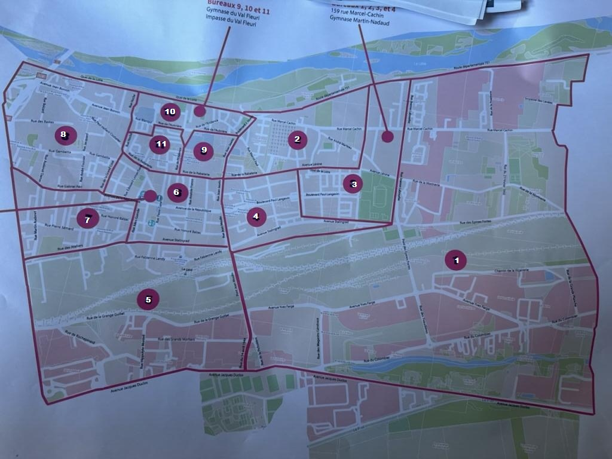
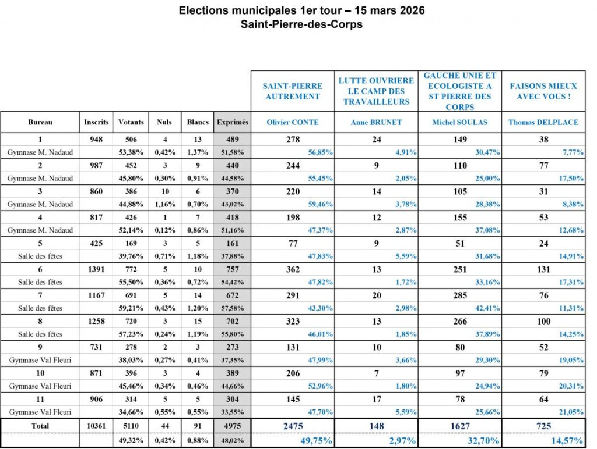

Découpage électoral

Résultats du premier tour

Résultats du second tour

Analyse des résultats
Les élections municipales 2026 à Saint-Pierre-des-Corps ont vu la victoire d'Olivier Conte au second tour, face à Michel Soulas. La participation a augmenté légèrement entre les deux tours (49,3 % à 51,6 %).
Les résultats par bureau de vote montrent une géographie électorale contrastée :
- Les bureaux 1, 3 et 10 constituent des bastions solides pour Conte (>60 %).
- Les bureaux 4, 5, 6 et 8 sont des zones charnières, perdues de peu.
- Les bureaux 7 et 11 restent favorables à Soulas, mais trop faiblement.
VESEMT, qui avait appelé à voter blanc au premier tour, observe ces résultats avec lucidité. La gauche disposait d'un réservoir théorique de 2500 voix, mais n'en a mobilisé que 2386. Il manque donc environ 114 électeurs à l'appel.
Saint-Pierre-des-Corps n'a pas basculé. Elle a changé de logique. Et dans cette nouvelle logique, la cohérence bat la dispersion, même minoritaire.
Commentaires